Created: 2018-04-01 Sun 19:10
Ravi Shankar was an extremely influential sitarist from Bengal, India. He had a distinct playing style characterized by unconventional rhythmic cycles and flowing, but disjunct, melodic lines.
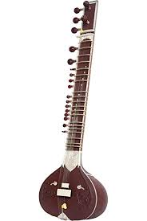
Figure 1: An indian sitar
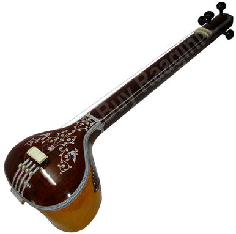
Figure 2: The tanpura: supports the melody with a harmonic drone.
Figure 3: The sitar: primary melodic instrument.
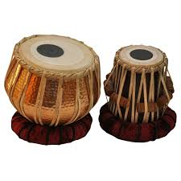
Figure 4: The tablas: primary rhythmic instrument.
The Khamaj is one of the ten Thaats (parent scales) of Hindustani classical music. The improvisational scale for this raga is shown below:
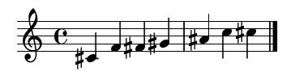
Figure 5: Ascending scale
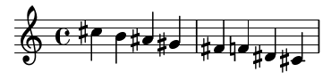
Figure 6: Descending scale
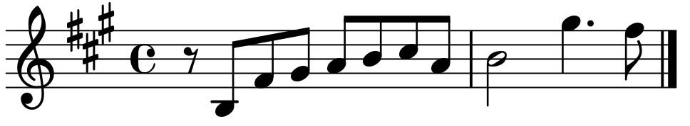
Figure 7: So What melody
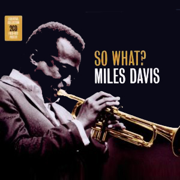
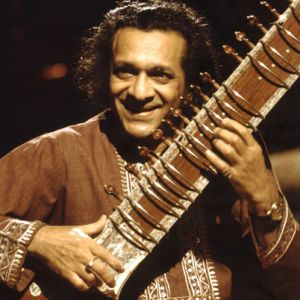
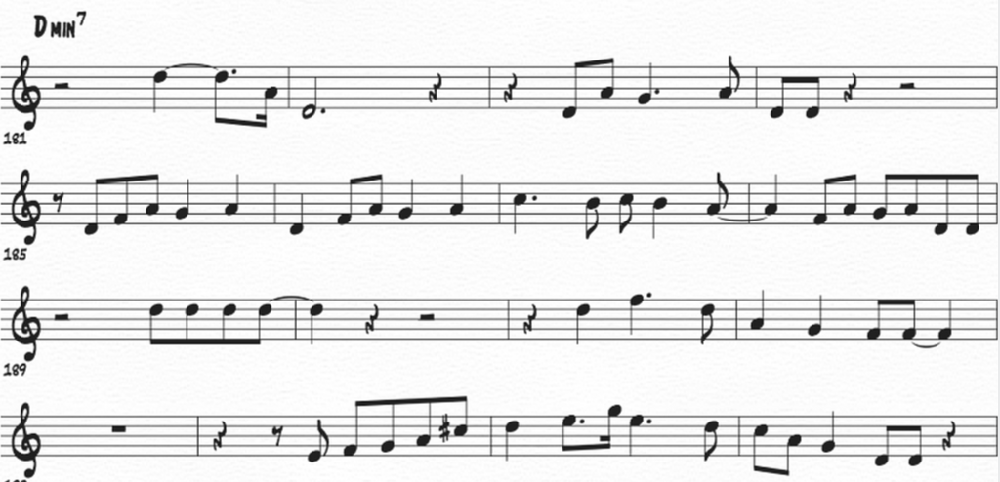
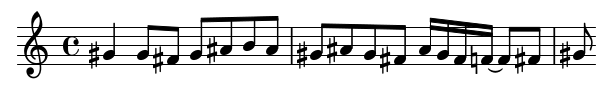
The improvisers in So What, especially Davis and Coltrane, have very similiar styles to Hindustani music.
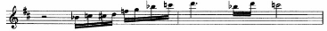
Surprisingly, Raag Khamaj and Hindustani music in general shares many of the same melodic constructs as Jazz.
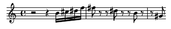
Sources and Discography:
"Raag Khamaj." Raag Khamaj - Indian Classical Music, Tanarang.com, 2015, www.tanarang.com/english/khamaj_eng.htm.
Ruston, P. “'So What' Analysis.” Architectures of Music, WordPress, 7 Mar. 2016, architecturesofmusic.wordpress.com/2016/03/07/so-what-analysis/.
MilesDavisVEVO. “Miles Davis - So What (Audio).” YouTube, 14 May 2013, www.youtube.com/watch?v=ylXk1LBvIqU.
TangibleEmotions. “Ravi Shankar & Anoushka Shankar Live: Raag Khamaj (1997).” YouTube, 21 Sept. 2011, www.youtube.com/watch?v=9xB_X9BOAOU.